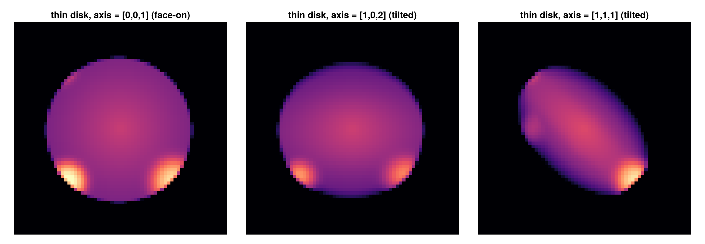
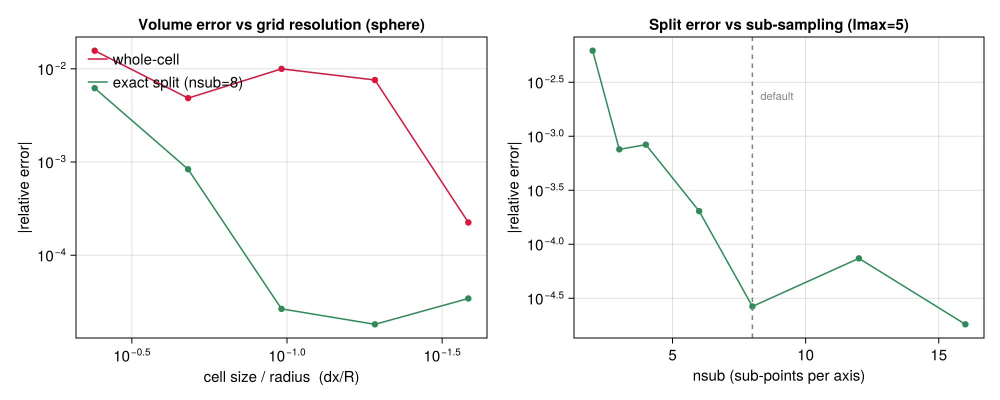
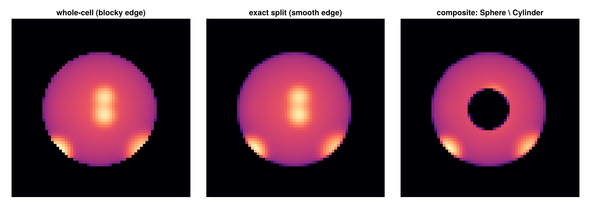

Subregions API Reference
Functions for defining and working with spatial subregions using different geometric shapes.
Which data types
Both functions dispatch on DataSetType, so they work on every data type Mera loads, not only the four with tutorial pages. The tutorials cover hydro, gravity, particles and clumps; RT and sinks are not written up but are supported by the same code.
| data type | subregion | shellregion | cell= | smooth boundary |
|---|---|---|---|---|
| hydro | yes | yes | yes | yes, on :cylinder |
| gravity | yes | yes | yes | no |
| RT | yes | yes | yes | no |
| particles | yes | yes | ignored (points) | no |
| clumps | yes | yes | ignored (points) | no |
| sinks | yes | yes | ignored (points) | no |
cell= decides whether a cell straddling the border is included whole or by its centre, so it is meaningful only for AMR cell data. Particles, clumps and sinks are points: they are in or out, and the keyword is accepted and ignored.
The smooth-boundary keywords are implemented only for the hydro cylinder.
Neither function applies the minimum-image convention. A sphere or shell centred near a box face is clipped at the boundary rather than wrapped, silently: you get a partial region and a total that looks plausible. getvar's :r_sphere_periodic / :r_cylinder_periodic exist for exactly this case on the quantity side, but there is no periodic region selector. On a run where the object of interest straddles a face, select by periodic radius instead.
Exported Functions
Main Subregion Functions
subregion: Unified interface for all geometric subregionsshellregion: Unified interface for all shell (hollow) regions
Supported Geometric Shapes
Cuboid/Box Regions
- Usage:
subregion(data, :cuboid, ...) - Shape: Box/rectangular regions defined by x, y, z ranges
- Parameters:
xrange,yrange,zrange,center
Cylindrical Regions
- Solid:
subregion(data, :cylinder, ...) - Shell:
shellregion(data, :cylinder, ...) - Shape: Cylinder defined by radius and height
- Parameters:
radius,height,center,direction(:x, :y, :z)
Spherical Regions
- Solid:
subregion(data, :sphere, ...) - Shell:
shellregion(data, :sphere, ...) - Shape: Sphere defined by radius
- Parameters:
radius,center - Shell Parameters:
radius=[inner, outer]for hollow shells
Usage Examples
Solid Regions
# Cuboid selection
subregion(data, :cuboid, xrange=[0.3, 0.7], yrange=[0.3, 0.7])
# Cylindrical selection
subregion(data, :cylinder, radius=10., height=5., center=[24,24,24], range_unit=:kpc)
# Spherical selection
subregion(data, :sphere, radius=15., center=[24,24,24], range_unit=:kpc)Shell Regions
# Cylindrical shell (annular cylinder)
shellregion(data, :cylinder, radius=[5., 10.], height=2., range_unit=:kpc)
# Spherical shell (hollow sphere)
shellregion(data, :sphere, radius=[8., 12.], range_unit=:kpc)Coordinate Systems & Parameters
Common Parameters
center: Spatial center coordinates[x, y, z]range_unit: Units for spatial parameters (:kpc,:pc,:Mpc,:standard)inverse: Select region outside the specified geometryverbose: Control output verbosity
Cuboid Parameters
xrange,yrange,zrange:[min, max]ranges for each axis
Cylindrical Parameters
radius: Cylinder radius (solid) or[inner, outer](shell)height: Cylinder height (total height is 2×height)direction: Cylinder axis direction (:x,:y,:z)
Spherical Parameters
radius: Sphere radius (solid) or[inner, outer](shell)
Composable regions with exact cell splitting
Reference for the value-type API. For the same material derived step by step on real data, one sphere measured three ways, the mass ledger, and how exact "exact" is, see Get Subregions.
Alongside the symbol API (subregion(data, :sphere; …)), subregion accepts a region value type (Sphere, Cuboid, Cylinder, SphericalShell, CylindricalShell). With split=true (the default for this form), cells straddling the region boundary are clipped exactly: each kept cell carries a :fraction ∈ (0,1] equal to the volume fraction inside the region, and getvar(:mass) / (:volume) / msum report the exact in-region totals, a sphere of radius R returns (4/3)πR³, with no boundary over- or under-counting.
gas_in = subregion(gas, Sphere(20.0; center=[:bc], range_unit=:kpc)) # split=true
msum(gas_in, :Msol) # exact enclosed mass (boundary cells weighted by their inside-fraction)
subregion(gas, Cuboid(xrange=[-10,10], yrange=[-10,10], zrange=[-2,2], range_unit=:kpc))
subregion(gas, SphericalShell(10.0, 20.0; range_unit=:kpc))
subregion(gas, CylindricalShell(3.0, 8.0, 4.0; range_unit=:kpc)) # value-type analogue of shellregion(:cylinder)
subregion(gas, Cylinder(15.0, 3.0; range_unit=:kpc); split=false) # classic whole-cell selectionsplit=false reproduces the classic centre-inside, whole-cell selection (no :fraction). inverse=true selects the complement. The region types (AbstractRegion, Sphere, Cuboid, Cylinder, SphericalShell) are listed in the API reference.
The value-type form works on all data types: hydro, gravity and RT (AMR cells, with exact volume splitting and a :fraction column), and particles, where it is a point-membership test (particles are points, so split/nsub do not apply and no :fraction is attached).
subregion(particles, Sphere(20.0; range_unit=:kpc)) # stars/DM inside a ball
subregion(particles, Sphere(20.0; range_unit=:kpc) \ Cylinder(5.0, 30.0; range_unit=:kpc))
subregion(gravity, Sphere(20.0; range_unit=:kpc)) # exact-split gravity cellsBoolean combinations
Regions compose with the operators ∩ (intersection), ∪ (union), \ (difference) and ! (complement), each result is itself a region, so they nest. The children may even have different centres.
subregion(gas, Sphere(20.0; range_unit=:kpc) \ Cylinder(5.0, 30.0; range_unit=:kpc)) # ball, cylinder drilled out
subregion(gas, Sphere(20.0; range_unit=:kpc) ∩ Cuboid(xrange=[-10,10], yrange=[-10,10], zrange=[-3,3], range_unit=:kpc))
subregion(gas, !Sphere(20.0; range_unit=:kpc)) # everything outside the ballTilted cylinders / disks (arbitrary axis)
Cylinder takes an axis (any non-zero 3-vector, normalised internally), its symmetry direction, so you can select an inclined disk or cylinder, e.g. along a galaxy's spin vector. The default [0,0,1] is the classic z-aligned cylinder; the volume is invariant under the orientation. A thin cylinder is a disk:
subregion(gas, Cylinder(15.0, 1.0; axis=[1,0,2], range_unit=:kpc)) # a thin disk tilted in the x–z plane
subregion(gas, Cylinder(15.0, 5.0; axis=spin, range_unit=:kpc)) # cylinder along an arbitrary spin vector
The same thin disk projected along z for three axis directions, face-on (a circle) and two tilts (foreshortened ellipses).
Accuracy of the splitting
Exact splitting is dramatically more accurate than whole-cell selection, and converges with grid resolution. For a sphere, the whole-cell volume error stays at the ~0.5 to 1.5 % level and is erratic (it is a step function of which cell centres fall inside), while exact splitting (default nsub=8) is 10 to 100× smaller and falls smoothly as the cells shrink:

nsub (per-axis sub-sampling of boundary cells, default 8) trades cost for accuracy; the error floor past nsub≈8 is set by the grid resolution, not the sampling (right panel). Only boundary cells are ever sub-sampled, interior/exterior cells are an O(1) corner test, so the cost is modest. Cuboids are split analytically (exact, no sampling). The figure is reproduced by test/55_region_algebra_tests.jl (a CI convergence test) and docs/make_region_figures.jl.
Projections of split regions
The :fraction carries through to projection automatically: projection takes its mass weight from getvar(:mass), which honours :fraction, so a projection of a split subregion is exactly region-clipped: boundary cells are dimmed by their inside-fraction (a smooth, anti-aliased edge instead of a blocky one), and a :sd map integrates to the exact enclosed mass.
ball = subregion(gas, Sphere(20.0; range_unit=:kpc)) # split=true
projection(ball, :sd, :Msol_pc2; pxsize=[100., :pc]) # exact clipped Σ-map
projection(subregion(gas, Sphere(20.0; range_unit=:kpc) \ Cylinder(5.0, 40.0; range_unit=:kpc)), :sd, :Msol_pc2)
Left → right: a sphere selected with whole cells (blocky edge), the same sphere with exact splitting (smooth edge), and a composite Sphere \ Cylinder (a ball with a cylindrical hole).
Additional Analysis Functions
getextent: Get spatial extent informationcenter_of_mass/com: Calculate center of massgetpositions: Extract position datagetvelocities: Extract velocity data
Data Type Support
All subregion functions support multiple data types through Julia's multiple dispatch:
- HydroDataType: Gas/fluid data with AMR support
- PartDataType: Particle/stellar data
- ClumpDataType: Halo/clump data
- GravDataType: Gravitational field data
For complete function documentation: see the Complete API Reference.
Function Reference
Mera.subregion — Function
Cutout sub-regions of the data base of DataSetType
- select shape of a region
- select size of a region (with or w/o intersecting cells)
- give the spatial center (with units) of the data relative to the full box
- relate the coordinates to a direction (x,y,z)
- inverse the selected region
- pass a struct with arguments (myargs)
subregion(dataobject::DataSetType, shape::Symbol=:cuboid;
xrange::Array{<:Any,1}=[missing, missing], # cuboid
yrange::Array{<:Any,1}=[missing, missing], # cuboid
zrange::Array{<:Any,1}=[missing, missing], # cuboid
radius::Real=0., # cylinder, sphere
height::Real=0., # cylinder
direction::Symbol=:z, # cylinder
center::CenterType=[0.,0.,0.], # all
range_unit::Symbol=:standard, # all
cell::Bool=true, # hydro, gravity and RT (AMR cell data)
inverse::Bool=false, # all
verbose::Bool=true, # all
myargs::ArgumentsType=ArgumentsType() ) # allArguments
Required:
dataobject: needs to be of type: "DataSetType"shape: select between region shapes: :cuboid, :cylinder/:disc, :sphere
Predefined/Optional Keywords:
For cuboid region, related to a given center:
xrange: the range between [xmin, xmax] in units given by argumentrange_unitand relative to the givencenter; zero length for xmin=xmax=0. is converted to maximum possible lengthyrange: the range between [ymin, ymax] in units given by argumentrange_unitand relative to the givencenter; zero length for ymin=ymax=0. is converted to maximum possible lengthzrange: the range between [zmin, zmax] in units given by argumentrange_unitand relative to the givencenter; zero length for zmin=zmax=0. is converted to maximum possible length
For cylindrical region, related to a given center:
radius: the radius between [0., radius] in units given by argumentrange_unitand relative to the givencenterheight: the hight above and below a plane [-height, height] in units given by argumentrange_unitand relative to the givencenterdirection: todo
For spherical region, related to a given center:
radius: the radius between [0., radius] in units given by argumentrange_unitand relative to the givencenter
Keywords related to all region shapes
range_unit: the units of the given ranges: :standard (code units), :Mpc, :kpc, :pc, :mpc, :ly, :au , :km, :cm (of typye Symbol) ..etc. ; see for defined length-scales viewfields(info.scale)center: in units given by argumentrange_unit; by default [0., 0., 0.] — the box CORNER. That is the right origin for:cuboid, whose ranges are absolute box coordinates. For the distance-based shapes (:sphere,:cylinder, the shell forms) it places the region at the corner, so only the part inside the box is kept; that is a valid region but rarely the intent, and Mera says so once per shape. Give the box centre as [:bc] or [:boxcenter], a point as [x, y, z], or mix them: [value, :bc, :bc]. A single 0.0 component is fine (a sphere on the x = 0 face); only an all-zero centre triggers the note.inverse: inverse the region selection = get the data outside of the regioncell: take intersecting cells of the region boarder into account (true) or only the cells-centers within the selected region (false)verbose: print timestamp, selected vars and ranges on screen; default: truemyargs: pass a struct of ArgumentsType to pass several arguments at once and to overwrite default values of xrange, yrange, zrange, radius, height, direction, center, range_unit, verbose
subregion(obj, region::AbstractRegion; split=true, inverse=false, nsub=8, verbose=true)Select the data covered by a composable region (Sphere, Cuboid, Cylinder, SphericalShell, or any boolean combination ∩/∪/\/!). Works on hydro, gravity, RT (AMR cells) and particle data.
For AMR cell data with split=true (default) each kept cell carries an exact :fraction ∈ (0,1] — the volume fraction inside the region — and getvar(:mass) / getvar(:volume) / msum report the exact in-region totals (no boundary over/under- counting). With split=false whole cells are kept by a centre-inside test (the classic behaviour) and no :fraction is attached. nsub (default 8) is the per-axis sub-sampling of boundary cells for curved/composite regions (diminishing returns past ~8).
For particle data the region is a point-membership test (particles are points — there is no fractional volume, so split/nsub do not apply). inverse=true selects the complement.
Accuracy. With split=true an axis-aligned Cuboid is analytic (per-axis overlap product) and matches the exact volume to floating point; curved boundaries are sub-sampled nsub per axis and measure $-0.0015$ % on a 10 kpc sphere. For comparison, on the same sphere the centre test lands $+0.18$ % off with no guaranteed sign, and whole cells $+12$ % over — an upper bound whose size is set by the cell size at the boundary, not by the region. The "How Quantities Are Computed" page carries the full accuracy table.
refine::Int=0 (AMR cell data, split=true only) geometrically subdivides the boundary-straddling cells up to refine levels: each straddling cell is replaced by its octree children (rows at level+1 with the parent's field values — exact for the piecewise-constant AMR data), children fully inside keep fraction = 1, children fully outside are dropped, and still-straddling children recurse. Integrals (msum, volumes) are unchanged — they were already exact through :fraction — but the selection boundary becomes localised to cellsize/2^refine, so projections and maps of the sub-region render correspondingly sharper edges. Cost grows with the boundary area (≤ 8^refine per boundary cell; 2–3 is usually plenty).
refine_to = [length, unit] (e.g. [0.05, :kpc]; a plain number means code units) is the target-size variant: each straddling cell picks its OWN depth so its children are no larger than the given length — match it to a projection's pxsize and the rendered boundary becomes pixel-sharp regardless of the local AMR level. Mutually exclusive with refine; per-cell depth is capped at 10. Cost grows as (cellsize/target)³ per boundary cell, so scope the call to the area you will actually render.
Mera.shellregion — Function
Cutout sub-regions of the data base of DataSetType
- select shape of a shell-region
- select size of a region (with or w/o intersecting cells)
- give the spatial center (with units) of the data relative to the full box
- relate the coordinates to a direction (x,y,z)
- inverse the selected region
- pass a struct with arguments (myargs)
shellregion(dataobject::DataSetType, shape::Symbol=:cylinder;
radius::Array{<:Real,1}=[0.,0.], # cylinder, sphere;
height::Real=0., # cylinder
direction::Symbol=:z, # cylinder
center::CenterType=[0., 0., 0.], # all
range_unit::Symbol=:standard, # all
cell::Bool=true, # hydro and gravity
inverse::Bool=false, # all
verbose::Bool=true, # all
myargs::ArgumentsType=ArgumentsType() ) # allArguments
Required:
dataobject: needs to be of type: "DataSetType"shape: select between region shapes: :cylinder/:disc, :sphere
Predefined/Optional Keywords:
For cylindrical shell-region, related to a given center:
radius: the inner and outer radius of the shell in units given by argumentrange_unitand relative to the givencenterheight: the hight above and below a plane [-height, height] in units given by argumentrange_unitand relative to the givencenterdirection: todo
For spherical shell-region, related to a given center:
radius: the inner and outer radius of the shell in units given by argumentrange_unitand relative to the givencenter
Keywords related to all region shapes
range_unit: the units of the given ranges: :standard (code units), :Mpc, :kpc, :pc, :mpc, :ly, :au , :km, :cm (of typye Symbol) ..etc. ; see for defined length-scales viewfields(info.scale)center: in units given by argumentrange_unit; by default [0., 0., 0.] — the box CORNER. That is the right origin for:cuboid, whose ranges are absolute box coordinates. For the distance-based shapes (:sphere,:cylinder, the shell forms) it places the region at the corner, so only the part inside the box is kept; that is a valid region but rarely the intent, and Mera says so once per shape. Give the box centre as [:bc] or [:boxcenter], a point as [x, y, z], or mix them: [value, :bc, :bc]. A single 0.0 component is fine (a sphere on the x = 0 face); only an all-zero centre triggers the note.inverse: inverse the region selection = get the data outside of the regioncell: take intersecting cells of the region boarder into account (true) or only the cells-centers within the selected region (false)verbose: print timestamp, selected vars and ranges on screen; default: truemyargs: pass a struct of ArgumentsType to pass several arguments at once and to overwrite default values of radius, height, direction, center, range_unit, verbose
Mera.@region — Macro
@region [unit=…] [center=…] begin … endBuild a (composite) region with shared constructor defaults and named parts. Inside the block, every Sphere/Cuboid/Cylinder/SphericalShell/CylindricalShell call that does not set range_unit/center itself receives the block's unit/center; explicit keywords always win. Assignments name intermediate parts; the block's last expression is the returned region — an ordinary AbstractRegion value, identical to writing the constructors out by hand.
capstone = @region unit=:kpc center=[:bc] begin
disc = Cylinder(12, 2)
blister = Sphere(2.5; center=[30, :bc, 26]) # explicit center wins
chimney = Cylinder(1.2, 5; center=[19, :bc, :bc])
(disc ∪ blister) \ chimney
end
subregion(gas, capstone)